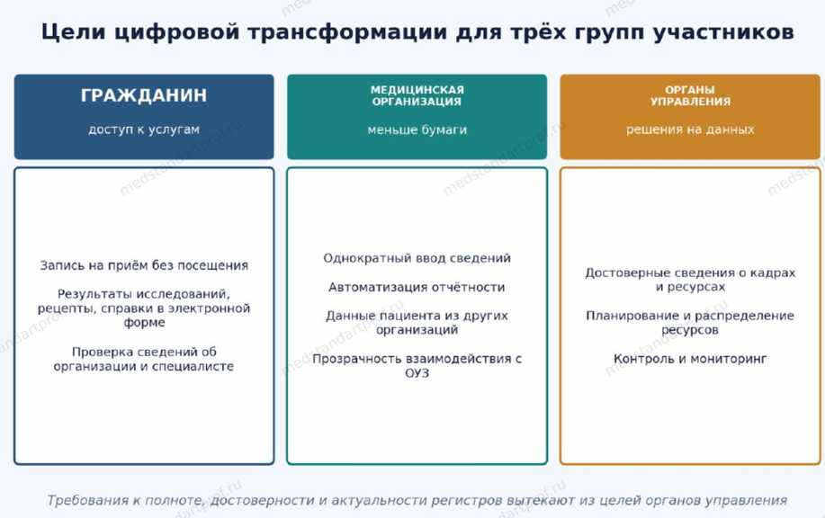
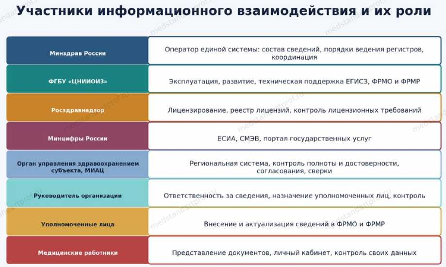
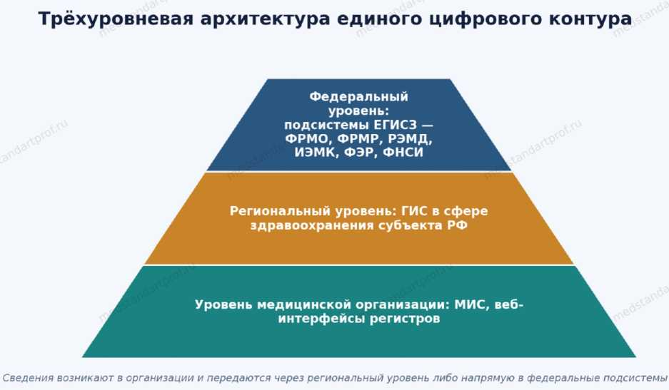
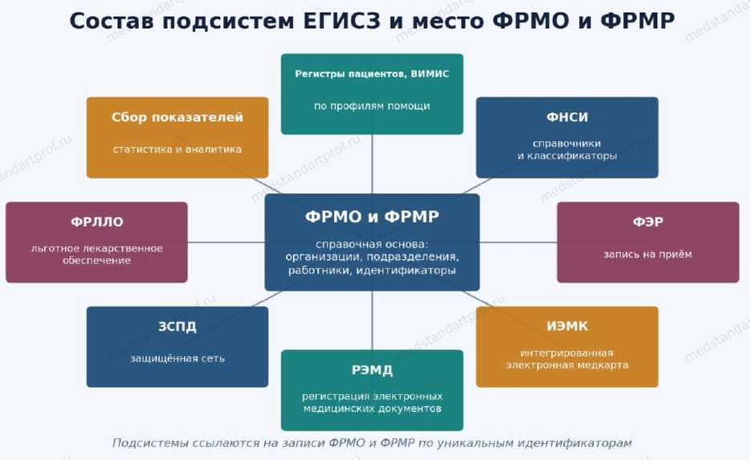
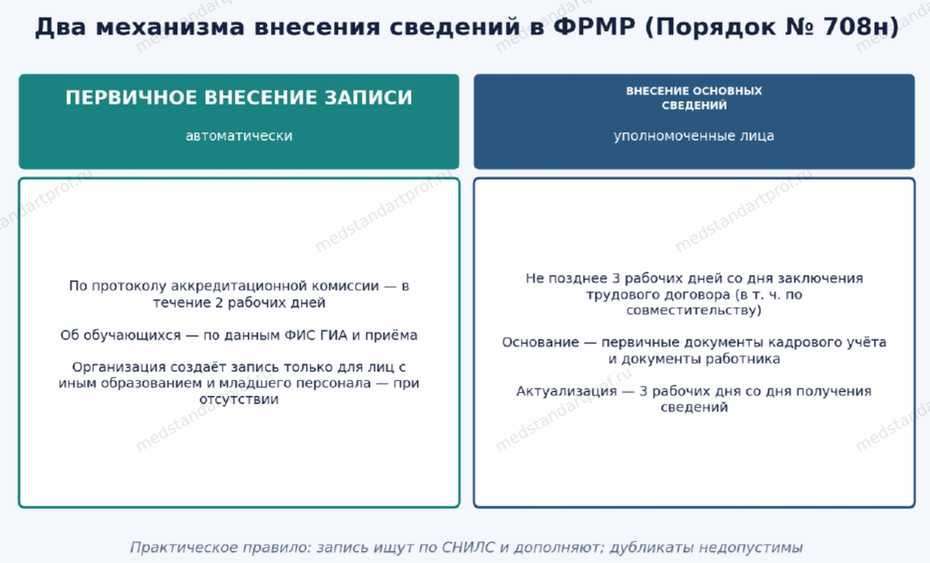
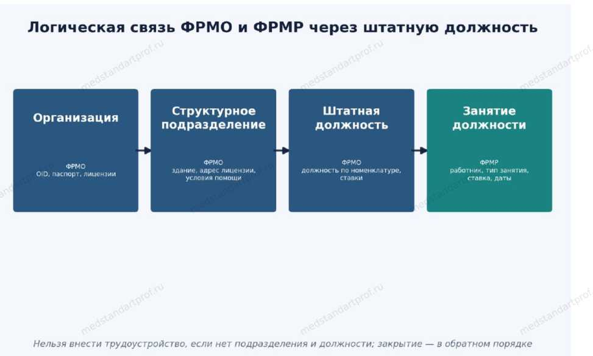

Работа с федеральными регистрами медицинских организаций и медицинских работников — не изолированная техническая обязанность, а часть общегосударственной перестройки здравоохранения на основе данных. Понимание того, зачем государство собирает сведения об организациях и работниках, какие решения на них опираются и кто участвует в этом процессе, позволяет ответственному лицу медицинской организации выполнять свои функции осмысленно, а не формально.
Цель лекции — сформировать представление о целях, этапах и участниках цифровой трансформации здравоохранения Российской Федерации и определить место федеральных регистров в этом процессе.
Информатизация здравоохранения в Российской Федерации прошла несколько этапов. На первом этапе (2000-е годы) в медицинских организациях появлялись локальные программы для отдельных задач — регистратуры, бухгалтерии, статистики. Данные хранились разрозненно, не были сопоставимы между организациями и не передавались на федеральный уровень в машиночитаемом виде.
На втором этапе (2011-2018 годы) в рамках программы модернизации здравоохранения были созданы региональные медицинские информационные системы и первая версия единой государственной информационной системы в сфере здравоохранения. Основной задачей стала запись на приём в электронном виде, ведение электронной медицинской карты и передача сведений в федеральные сервисы.
Третий этап — цифровая трансформация — начался с утверждения федерального проекта «Создание единого цифрового контура в здравоохранении на основе единой государственной информационной системы в сфере здравоохранения (ЕГИСЗ)» в составе национального проекта «Здравоохранение» (2019-2024 годы) и продолжается в рамках национального проекта «Продолжительная и активная жизнь» и государственной программы «Развитие здравоохранения». Ключевое отличие трансформации от информатизации — данные перестают быть побочным продуктом деятельности и становятся основой для принятия управленческих и клинических решений.
Цифровая трансформация здравоохранения — это комплексное изменение процессов оказания медицинской помощи, управления отраслью и взаимодействия с гражданами, при котором первичные сведения фиксируются однократно в электронной форме в месте их возникновения, а затем многократно используются всеми участниками системы здравоохранения без повторного ввода.
Принцип однократного ввода имеет прямое отношение к федеральным регистрам. Сведения о медицинской организации вносятся в федеральный реестр медицинских и фармацевтических организаций (ФРМО) один раз, после чего используются при регистрации электронных медицинских документов, формировании реестров для социальных выплат, лицензировании, статистическом наблюдении и планировании. Сведения о работнике, внесённые в федеральный регистр медицинских и фармацевтических работников (ФРМР), используются при аккредитации, непрерывном образовании, назначении выплат и расчёте обеспеченности кадрами.
Для пациента цифровая трансформация означает доступ к собственным медицинским данным и услугам без посещения организации: запись на приём, получение результатов исследований, электронных рецептов и справок через единый портал государственных и муниципальных услуг, а также возможность проверить сведения о медицинской организации и специалисте.
Для медицинской организации цель — сокращение бумажного документооборота, автоматизация отчётности, доступ к данным пациента из других организаций через интегрированную электронную медицинскую карту, а также прозрачность взаимодействия с органами управления здравоохранением и страховыми организациями.
Для органов управления здравоохранением федерального и регионального уровней цель — получение достоверных, полных и актуальных сведений о ресурсах системы здравоохранения (организации, кадры, оборудование, коечный фонд) и об оказанной медицинской помощи для планирования, контроля и распределения ресурсов.
Именно эта группа целей определяет требования к федеральным регистрам. Управленческое решение, принятое на основе неполных или устаревших сведений о кадрах и ресурсах, будет ошибочным независимо от качества аналитики. Поэтому обязанность медицинской организации обеспечивать полноту, достоверность и своевременность сведений в регистрах закреплена нормативно и является лицензионным требованием.
Рисунок 1. Цели цифровой трансформации для трёх групп участников
Основой информационного обеспечения здравоохранения является глава 10 Федерального закона от 21.11.2011 № 323-ФЗ «Об основах охраны здоровья граждан в Российской Федерации». Статья 91 устанавливает общие требования к информационным системам в сфере здравоохранения, статья 91.1 — к единой государственной информационной системе, статьи 92-93.1 — к ведению персонифицированного учёта при осуществлении медицинской деятельности, в том числе сведений о лицах, участвующих в осуществлении медицинской и фармацевтической деятельности, и об обучающихся.
Порядок функционирования единой системы, состав её подсистем, перечень поставщиков и пользователей информации, а также состав сведений и сроки их размещения установлены Положением о единой государственной информационной системе в сфере здравоохранения,

утверждённым постановлением Правительства Российской Федерации от 09.02.2022 № 140. Этот документ заменил ранее действовавшее постановление Правительства Российской Федерации от 05.05.2018 № 555 и действует с 1 марта 2022 года.
Стратегическую рамку задают национальные цели развития, установленные Указом Президента Российской Федерации от 07.05.2024 № 309, в числе которых — цифровая трансформация государственного управления и социальной сферы, а также государственная программа «Развитие здравоохранения» и ведомственные проекты Минздрава России по развитию единого цифрового контура. Целевые показатели этих документов (доля медицинских организаций, передающих сведения в ЕГИСЗ; доля электронных медицинских документов; доля граждан, использующих цифровые сервисы) напрямую зависят от корректности сведений в ФРМО и ФРМР, поскольку именно по регистрам определяется, какие организации и какие работники должны участвовать в информационном обмене.
Минздрав России — оператор единой системы, определяет состав сведений, утверждает порядки ведения регистров, координирует развитие подсистем.
ФГБУ «Центральный научно-исследовательский институт организации и информатизации здравоохранения» Минздрава России — организация, обеспечивающая эксплуатацию, развитие и техническую поддержку единой системы, включая ФРМО и ФРМР; на её базе работает служба технической поддержки участников ЕГИСЗ.
Росздравнадзор — осуществляет лицензирование медицинской деятельности и контроль соблюдения лицензионных требований, в числе которых — размещение сведений в ЕГИСЗ.
Минцифры России — оператор инфраструктуры электронного правительства: единой системы идентификации и аутентификации (ЕСИА), системы межведомственного электронного взаимодействия (СМЭВ), единого портала государственных и муниципальных услуг.
Социальный фонд России, Федеральный фонд обязательного медицинского страхования — потребители сведений регистров при назначении социальных выплат и организации обязательного медицинского страхования.
Орган исполнительной власти субъекта Российской Федерации в сфере охраны здоровья (орган управления здравоохранением) — обеспечивает функционирование государственной информационной системы субъекта, контролирует полноту и достоверность сведений подведомственных и частных организаций, согласует ряд сведений в ФРМО.
Медицинский информационно-аналитический центр (МИАЦ) или аналогичная организация — региональный оператор, осуществляющий методическое сопровождение, консультирование, проверку данных и взаимодействие с федеральной технической поддержкой.
Руководитель медицинской организации — несёт ответственность за организацию учёта и достоверность сведений, назначает уполномоченных лиц, контролирует внесение и актуализацию сведений.
Уполномоченные лица — работники, которым приказом руководителя поручено внесение и актуализация сведений в ФРМО и ФРМР. В зависимости от размера организации это могут быть работники кадровой службы, организационно-методического отдела, отдела медицинской статистики, служба информационных технологий.
Медицинские и фармацевтические работники — субъекты персонифицированного учёта, обязанные предоставлять документы, необходимые для ведения регистра, и имеющие доступ к собственным сведениям через личный кабинет.

Рисунок 2. Участники информационного взаимодействия и их роли
Единый цифровой контур строится по принципу «медицинская информационная система организации — государственная информационная система субъекта — единая федеральная система». Первичные сведения возникают в медицинской организации: приём работника, открытие отделения, поступление оборудования, оказание медицинской помощи. Они фиксируются в медицинской информационной системе организации либо непосредственно в веб-интерфейсе федеральной подсистемы, передаются в региональную систему (при её наличии) и далее — в федеральные подсистемы.
Для ФРМО и ФРМР характерны два режима работы:
• прямое ведение — уполномоченное лицо вносит сведения через вебинтерфейс федеральной подсистемы;
• интеграционное ведение — сведения передаются из региональной или медицинской информационной системы по установленным интеграционным профилям.
Независимо от режима ответственность за полноту, достоверность и своевременность сведений несёт медицинская организация. Это положение будет неоднократно повторяться в курсе: технический способ передачи не изменяет обязанностей поставщика информации.
6. Место федеральных регистров в системе принятия решений
Сведения ФРМО и ФРМР используются в следующих процессах:
|
Процесс |
Используемые сведения |
Последствия ошибок в регистрах |
|
Лицензирование медицинской деятельности |
Реквизиты организации, адреса мест осуществления деятельности, работники и их квалификация |
Отказ в предоставлении лицензии, предписание, привлечение к ответственности |
|
Регистрация электронных медицинских документов |
Идентификатор организации, подразделения, сведения о медицинском работнике, подписавшем документ |
Отклонение документа федеральным реестром электронных медицинских документов |
|
Аккредитация специалистов |
Сведения об образовании, стаже, месте работы |
Невозможность подачи документов через личный кабинет, отказ в аккредитации |
|
Специальные социальные выплаты медицинским работникам |
Организация, должность, ставка, вид занятости |
Отказ в назначении выплаты, необходимость возврата средств |
|
Статистическое наблюдение |
Штатное расписание, коечный фонд, оборудование |
Искажение отчётных форм, замечания органа управления здравоохранением |
|
Планирование и распределение ресурсов |
Обеспеченность кадрами, оснащённость |
Некорректные решения о распределении ресурсов, программах привлечения кадров |
Из таблицы следует, что качество данных в регистрах напрямую влияет на права организации и её работников. Ошибка в одной записи может остановить регистрацию электронных документов всей организации или лишить работника выплаты.
Цифровая трансформация здравоохранения переводит отрасль на модель управления на основе данных, в которой федеральные регистры медицинских организаций и работников выполняют роль справочной основы для всех остальных подсистем. Участники трансформации распределены по трём уровням — федеральному, региональному и уровню медицинской организации, — и на каждом уровне закреплены обязанности по формированию, проверке и использованию сведений. Ответственность за первичные данные лежит на медицинской организации и её уполномоченных лицах, поэтому освоение правил ведения регистров является профессиональной обязанностью, а не факультативным навыком.
1. Федеральный закон от 21.11.2011 № 323-ФЗ «Об основах охраны здоровья граждан в Российской Федерации» (с последующими изменениями и дополнениями), статьи 91-93.1.
2. Постановление Правительства Российской Федерации от 09.02.2022 № 140 «О единой государственной информационной системе в сфере здравоохранения» (с последующими изменениями и дополнениями).
3. Постановление Правительства Российской Федерации от 01.06.2021 № 852 «О лицензировании медицинской деятельности...» (с последующими изменениями и дополнениями).
4. Указ Президента Российской Федерации от 07.05.2024 № 309 «О национальных целях развития Российской Федерации на период до 2030 года и на перспективу до 2036 года».
5. Постановление Правительства Российской Федерации от 26.12.2017 № 1640 «Об утверждении государственной программы Российской Федерации «Развитие здравоохранения» (с последующими изменениями и дополнениями).
6. Портал оперативного взаимодействия участников ЕГИСЗ. — URL: portal.egisz.rosminzdrav.ru.
7. Официальный интернет-портал правовой информации. — URL: pravo.gov.ru.
Единая государственная информационная система в сфере здравоохранения (ЕГИСЗ) — это не одна программа, а комплекс взаимосвязанных подсистем, каждая из которых решает собственную задачу и обменивается данными с остальными. Работник, отвечающий за ФРМО и ФРМР, должен понимать, откуда его подсистемы получают сведения и куда их передают: без этого невозможно объяснить, почему запись о работнике «не проходит», почему организация «не видна» в другой подсистеме и как исправить ситуацию.
Цель лекции — описать назначение, архитектуру и состав подсистем ЕГИСЗ, определить функции каждой подсистемы и её связи с федеральными регистрами.
Согласно статье 91.1 Федерального закона № 323-ФЗ единая государственная информационная система в сфере здравоохранения создаётся в целях обеспечения доступа граждан к услугам в сфере здравоохранения в электронной форме, а также взаимодействия информационных систем в сфере здравоохранения. Единая система обеспечивает возможность:
• ведения персонифицированного учёта при осуществлении медицинской деятельности;
• ведения федеральных реестров и регистров, в том числе реестра медицинских организаций и регистра медицинских работников;
• ведения интегрированной электронной медицинской карты и реестра электронных медицинских документов;
• мониторинга и анализа показателей деятельности системы здравоохранения;
• предоставления гражданам сведений и услуг в электронной форме.
Оператором единой системы является Минздрав России. Обеспечение функционирования, развития и технической поддержки возложено на подведомственное учреждение — ФГБУ «ЦНИИОИЗ» Минздрава России. Поставщиками информации в единую систему являются федеральные органы исполнительной власти, органы государственной власти субъектов Российской Федерации в сфере охраны здоровья, медицинские организации государственной, муниципальной и частной систем здравоохранения, фармацевтические организации, образовательные организации, фонды обязательного медицинского страхования и иные лица, определённые Положением о единой системе.
Пользователями информации являются те же участники, а также граждане в отношении собственных сведений. Обязанность медицинской организации размещать сведения в единой системе распространяется на организации всех форм собственности: частная медицинская организация обязана вести ФРМО и ФРМР наравне с государственной.
Архитектура единого цифрового контура включает три уровня.
Уровень медицинской организации — медицинская информационная система (МИС), в которой ведётся электронная медицинская карта, расписание, учёт услуг, а также могут вестись сведения о структуре организации и работниках для последующей передачи в регистры.
Региональный уровень — государственная информационная система в сфере здравоохранения субъекта Российской Федерации (ГИС СЗ субъекта), объединяющая сведения медицинских организаций региона и обеспечивающая обмен с федеральным уровнем. Требования к региональным системам установлены Положением о единой системе.
Федеральный уровень — подсистемы ЕГИСЗ, включая ФРМО, ФРМР, реестр электронных медицинских документов и интегрированную электронную медицинскую карту.
Обмен между уровнями осуществляется по защищённым каналам связи через интеграционные сервисы. Для ряда подсистем, в том числе ФРМО и ФРМР, предусмотрен также веб-интерфейс для прямой работы уполномоченных лиц. Доступ пользователей во все подсистемы производится через единую систему идентификации и аутентификации (ЕСИА) — учётную запись портала государственных услуг, подтверждённую установленным способом.
Рисунок 1. Трёхуровневая архитектура единого цифрового контура
Положение о единой системе определяет состав подсистем и функции каждой из них. Ниже приведены подсистемы, наиболее значимые для работы медицинской организации; официальный перечень содержится в разделе II Положения и подлежит сверке по действующей редакции.
Содержит структурированные сведения об организациях, осуществляющих медицинскую и фармацевтическую деятельность: реквизиты, адреса, лицензии, структурные подразделения, здания, штатное расписание, коечный фонд, оборудование, транспорт. Каждой организации и её подразделениям присваиваются уникальные идентификаторы, которые используются всеми остальными подсистемами. ФРМО является справочной основой единой системы: организация, отсутствующая в реестре или описанная в нём неверно, не может полноценно участвовать в информационном обмене.
Содержит персонифицированные сведения о лицах, участвующих в осуществлении медицинской и фармацевтической деятельности, а также об обучающихся по программам медицинского и фармацевтического образования: персональные данные, образование, сертификаты и аккредитация, сведения о трудоустройстве. Запись о работнике связана с записью об организации в ФРМО через штатную должность, поэтому регистр работников ведётся только после заполнения соответствующих разделов реестра организаций.

Аккумулирует обезличенные и персонифицированные сведения о случаях оказания медицинской помощи, переданные медицинскими организациями в виде структурированных электронных медицинских документов. Обеспечивает преемственность помощи между организациями.
Обеспечивает регистрацию электронных медицинских документов, подписанных усиленной квалифицированной электронной подписью медицинского работника и организации, и подтверждение их юридической значимости. При регистрации документа проверяется, что организация и подписавший работник присутствуют в ФРМО и ФРМР и сведения о них корректны. Именно поэтому ошибки в регистрах проявляются как отказы в регистрации документов.
Обеспечивает запись на приём к врачу, в том числе через единый портал государственных услуг. Расписание врача может быть опубликовано только при наличии сведений о нём в ФРМР и о подразделении — в ФРМО.
Содержит сведения о гражданах, имеющих право на льготное обеспечение лекарственными препаратами, и о выписанных и отпущенных препаратах.
Объединяет регистры по отдельным заболеваниям и состояниям (в том числе вертикально интегрированные медицинские информационные системы по профилям), которые используют сведения ФРМО и ФРМР для идентификации организаций и лечащих врачей.
Содержит справочники и классификаторы, используемые всеми подсистемами: номенклатуру медицинских организаций, должностей, специальностей, видов и профилей медицинской помощи, коечного фонда, медицинских изделий и другие. Значения полей в ФРМО и ФРМР выбираются из справочников ФНСИ, а не вводятся вручную, что обеспечивает единообразие данных.
Обеспечивает формирование и сбор статистической и аналитической отчётности из медицинских организаций и субъектов Российской Федерации, в том числе на основе сведений регистров.
Обеспечивает защищённое взаимодействие информационных систем участников единой системы. Подключение медицинской организации к защищённой сети является условием интеграционного взаимодействия.
Положение предусматривает также подсистемы обезличивания персональных данных, геоинформационную подсистему, подсистему мониторинга и контроля закупок лекарственных препаратов, федеральную подсистему телемедицинских консультаций, личные кабинеты и другие. Их состав уточняется при изменениях Положения.
Рисунок 2. Состав подсистем ЕГИСЗ и место ФРМО и ФРМР
В единой системе действует принцип ссылочной целостности: подсистемы, обрабатывающие сведения о случаях медицинской помощи, документах и выплатах, не хранят собственных описаний организаций и работников, а ссылаются на записи ФРМО и ФРМР по уникальным идентификаторам. Следствия этого принципа:
1. Организация должна быть зарегистрирована в ФРМО до начала любого другого взаимодействия с единой системой.
2. Работник должен быть внесён в ФРМР и связан со штатной должностью до того, как от его имени будет подписан электронный документ или опубликовано расписание.
3. Изменения в организации (новое подразделение, новый адрес) и у работника (перевод, увольнение) должны отражаться в регистрах до того, как они повлияют на другие процессы.
Каждой организации в ФРМО присваивается уникальный идентификатор — объектный идентификатор (OID) в пространстве идентификаторов Минздрава России. Такие же идентификаторы получают структурные подразделения. Идентификатор организации используется в электронных медицинских документах, в справочниках ФНСИ и при обращениях в техническую поддержку. Запись о работнике в ФРМР

получает уникальный номер реестровой записи, а сам работник — личный кабинет.
Единая система предоставляет несколько точек входа для разных категорий пользователей:
|
Сервис |
Пользователь |
Назначение |
|
Личный кабинет участника ЕГИСЗ («Мой ЕГИСЗ») |
Руководитель и уполномоченные лица организации |
Управление полномочиями пользователей,заявки на доступ к подсистемам |
|
Веб-интерфейс ФРМО и ФРМР |
Уполномоченные лица |
Внесение и актуализация сведений об организации и работниках |
|
Личный кабинет медицинского работника |
Медицинский и фармацевтический работник |
Просмотр собственных сведений, подача документов на периодическую аккредитацию, сообщения о расхождениях |
|
Портал оперативного взаимодействия участников ЕГИСЗ |
Все участники |
Руководства пользователя, новости, регламенты, форма обращения в поддержку |
|
Портал непрерывного медицинского и фармацевтического образования |
Работники и образовательные организации |
Учёт образовательной активности,сведения о которой используются при аккредитации |
|
Единый портал государственных услуг |
Граждане, организации |
Услуги в сфере здравоохранения, выписки об аккредитации |
Адреса сервисов и порядок доступа к ним рассматриваются в модуле 4.
Состав подсистем и требования к ним изменяются. За период с 2018 года было пересмотрено само положение о единой системе, введена обязательность ведения ФРМР для обучающихся, изменён порядок предоставления доступа к подсистемам (переход на подачу заявок через личный кабинет участника), расширен состав сведений ФРМО (характеристики зданий, условия и формы оказания помощи по подразделениям), введены новые интеграционные профили. Уполномоченное лицо обязано отслеживать такие изменения по официальным источникам — порталу оперативного взаимодействия и
письмам органа управления здравоохранением — и своевременно приводить сведения организации в соответствие с новыми требованиями.
ЕГИСЗ представляет собой совокупность подсистем, связанных общими справочниками и идентификаторами. Федеральные регистры организаций и работников являются справочной основой всей системы: без корректной записи в ФРМО и ФРМР невозможны регистрация электронных документов, публикация расписания, аккредитация и назначение выплат. Понимание архитектуры позволяет уполномоченному лицу правильно диагностировать причины отказов в смежных подсистемах и обоснованно планировать порядок внесения сведений — сначала организация, затем структура, затем работники.
1. Федеральный закон от 21.11.2011 № 323-ФЗ «Об основах охраны здоровья граждан в Российской Федерации» (с последующими изменениями и дополнениями), статьи 91,91.1, 92-93.1.
2. Постановление Правительства Российской Федерации от 09.02.2022 № 140 «О единой государственной информационной системе в сфере здравоохранения» (с последующими изменениями и дополнениями).
3. Постановление Правительства Российской Федерации от 28.11.2011 № 977 «О федеральной государственной информационной системе «Единая система идентификации и аутентификации...» (с последующими изменениями и дополнениями).
4. Приказ Минздрава России от 28.10.2022 № 708н «Об утверждении порядка ведения персонифицированного учета лиц, участвующих в осуществлении медицинской деятельности и фармацевтической деятельности, лиц, обучающихся по образовательным программам...».
5. Портал оперативного взаимодействия участников ЕГИСЗ. — URL: portal.egisz.rosminzdrav.ru.
6. Федеральный реестр нормативно-справочной информации. — URL: nsi.rosminzdrav.ru.
Два федеральных регистра — организаций и работников — часто воспринимаются как «две базы, которые надо заполнить для лицензии». В действительности это связанная пара справочников, от которой зависят десятки процессов внутри и вне медицинской организации. В этой лекции регистры рассматриваются как единая система с двух сторон: что каждый регистр содержит и кто использует его данные.
Цель лекции — раскрыть назначение и состав ФРМО и ФРМР, показать логическую связь между регистрами и определить потребителей их данных, чтобы обучающийся понимал последствия каждой внесённой записи.
ФРМО ведётся в целях учёта организаций, осуществляющих медицинскую и фармацевтическую деятельность, их структурных подразделений и ресурсов. Реестр обеспечивает:
• однозначную идентификацию организации и её подразделений во всех подсистемах единой системы;
• сопоставление сведений об организации с реестром лицензий Росздравнадзора;
• учёт ресурсов здравоохранения — зданий, коечного фонда, оборудования, транспорта, штатных должностей;
• формирование сведений для статистического наблюдения и планирования.
В ФРМО включаются все организации, осуществляющие медицинскую деятельность на основании лицензии, независимо от организационно-правовой формы и формы собственности, а также индивидуальные предприниматели, осуществляющие медицинскую деятельность, организации, осуществляющие фармацевтическую деятельность, и образовательные организации, реализующие программы медицинского и фармацевтического образования (в части ведения регистра обучающихся). Обязанность распространяется на организации, входящие в частную систему здравоохранения, что прямо следует из Положения о единой системе и Положения о лицензировании медицинской деятельности.
Состав сведений ФРМО установлен приложением к Положению о единой системе и детализирован в руководстве пользователя. Укрупнённо реестр содержит следующие группы сведений:
|
Группа сведений |
Содержание |
|
Общие сведения (паспорт организации) |
Полное и сокращённое наименование, организационно-правовая форма, форма собственности, ИНН, КПП, ОГРН, коды статистики, юридический и фактический адреса, учредитель, руководитель, контактные данные, ведомственная принадлежность, вид и профиль организации |
|
Лицензии |
Номера, даты, лицензирующий орган, адреса мест осуществления деятельности, перечень работ и услуг |
|
Здания |
Адреса, тип, площадь, этажность, право владения, год постройки, состояние |
|
Структурные подразделения |
Иерархия подразделений и отделений, их тип, профиль, условия и формы оказания помощи, привязка к зданиям, режим работы |
|
Штатное расписание |
Штатные должности по подразделениям с указанием количества ставок |
|
Коечный фонд |
Койки по подразделениям, профилям и видам |
|
Медицинское оборудование |
Единицы оборудования по типам, подразделениям, принадлежности |
|
Транспорт |
Санитарный автотранспорт, передвижные медицинские комплексы |
|
Прикреплённое население, участки |
Сведения об участках и прикреплённом населении для организаций, оказывающих первичную медикосанитарную помощь |
Точный перечень полей и обязательность их заполнения определяются действующей версией интерфейса и руководства пользователя, которые периодически обновляются.
ФРМР ведётся в целях персонифицированного учёта лиц, участвующих в осуществлении медицинской и фармацевтической деятельности, и обучающихся по программам медицинского и фармацевтического образования. Регистр обеспечивает:
• учёт кадрового состава здравоохранения по организациям, должностям и специальностям;
• учёт образования, квалификации, сертификатов и аккредитации;
• формирование личного кабинета работника и доступ к процедурам аккредитации;
• источник сведений для назначения выплат, расчёта обеспеченности и планирования подготовки кадров.
В соответствии со статьёй 93 Федерального закона № 323-ФЗ и Порядком, утверждённым приказом Минздрава России от 28.10.2022 № 708н, в регистр включаются:
• медицинские работники, в том числе с иным (немедицинским) образованием, допущенные к медицинской деятельности;
• младший медицинский персонал;
• фармацевтические работники;
• обучающиеся по программам среднего профессионального и высшего медицинского и фармацевтического образования.
Работники, не относящиеся к медицинскому и фармацевтическому персоналу (бухгалтерия, хозяйственная служба), в регистр не включаются, но их должности могут присутствовать в штатном расписании ФРМО.
Порядок № 708н разделяет сведения на три группы:
Персональные данные — фамилия, имя, отчество, пол, дата рождения, гражданство, данные документа, удостоверяющего личность, СНИЛС, сведения о прохождении аккредитации.
Основные сведения — место рождения, место жительства и регистрации, сведения об образовании (документы об образовании и квалификации, организации, выдавшие их, сертификаты специалиста, аккредитация, дополнительное профессиональное образование), наименование организации-работодателя, занимаемая должность, дата начала и окончания трудоустройства, тип занятия должности, ставка, причины и периоды временного неисполнения обязанностей, членство в профессиональных некоммерческих организациях.
Иные сведения — сведения о категории, учёной степени и звании, наградах и иные, предусмотренные интерфейсом регистра.
Порядок № 708н устанавливает два принципиально разных механизма:
1. Первичное внесение записи о медицинском или фармацевтическом работнике осуществляется автоматически на основании протокола аккредитационной комиссии — в течение двух рабочих дней со дня получения протокола. Уполномоченное лицо организации первично создаёт запись только для лиц, не прошедших аккредитацию (работники с иным образованием, младший медицинский персонал), на основании документов кадрового учёта и документов, представленных работником лично.
2. Внесение основных сведений (трудоустройство, должность, ставка и другие) осуществляется уполномоченными лицами организации не позднее трёх рабочих дней со дня заключения трудового договора, в том числе по совместительству. Актуализация сведений производится в течение трёх рабочих дней со дня получения новых сведений.
Из этого следует практическое правило: при приёме врача, прошедшего аккредитацию, уполномоченное лицо не создаёт новую запись, а находит существующую (по СНИЛС) и дополняет её сведениями о трудоустройстве. Создание дублирующей записи является типовой ошибкой, последствия которой рассматриваются в модуле 9.
Рисунок 1. Два механизма внесения сведений в ФРМР
Регистры связаны через штатную должность. Последовательность объектов такова:
Организация (ФРМО) Структурное подразделение (ФРМО) —> Штатная должность (ФРМО) Занятие должности работником (ФРМР)
Запись о трудоустройстве в карточке работника содержит ссылку на конкретную штатную должность конкретного подразделения. Следствия:
• нельзя внести сведения о трудоустройстве, если в ФРМО отсутствует подразделение или штатная должность;
• при переводе работника в другое подразделение в ФРМО должна существовать должность в этом подразделении;
• при ликвидации подразделения в ФРМО необходимо предварительно закрыть занятие должностей всеми работниками в ФРМР;
• количество занятых ставок по должности не может превышать количество штатных ставок.
Из логической модели вытекает обязательный порядок первичного заполнения регистров для новой организации:
1. Регистрация организации в ФРМО, заполнение паспорта.
2. Внесение лицензий и зданий.

3. Создание структурных подразделений с привязкой к зданиям и лицензируемым адресам.
4. Формирование штатного расписания по подразделениям.
5. Внесение сведений о трудоустройстве работников в ФРМР.
6. Заполнение ресурсных разделов ФРМО — оборудование, койки, транспорт.
Нарушение последовательности приводит к невозможности сохранить запись или к ошибкам форматно-логического контроля.
Рисунок 2. Логическая связь ФРМО и ФРМР через штатную должность

|
Подсистема |
Что берёт из ФРМО |
Что берёт из ФРМР |
|
РЭМД |
Идентификатор организации и подразделения для регистрации документа |
Сведения о работнике, подписавшем документ; должность, специальность |
|
иэмк |
Организация и подразделение, где оказана помощь |
Лечащий врач |
|
ФЭР |
Подразделения, режим работы, кабинеты |
Врачи, ведущие приём, их специальности |
|
ФНСИ |
Формирует справочник «Реестр медицинских организаций» |
— |
|
Специализированные регистры |
Организация наблюдения |
Лечащий врач |
|
Подсистема сбора показателей |
Ресурсы, коечный фонд, оборудование |
Кадровый состав, укомплектованность |
Росздравнадзор — сопоставляет сведения ФРМО с реестром лицензий, проверяет соблюдение лицензионных требований, включая наличие работников с необходимой квалификацией.
Федеральный аккредитационный центр и аккредитационные комиссии — используют ФРМР как источник сведений о специалисте при периодической аккредитации; документы подаются через личный кабинет работника.
Социальный фонд России — при назначении специальных социальных выплат медицинским работникам (постановление Правительства Российской Федерации от 31.12.2022 № 2568) сопоставляет реестры, направляемые организациями, со сведениями об организации и работнике; расхождения в должности, ставке или виде занятости приводят к отказам.
Органы управления здравоохранением субъектов — используют регистры для расчёта обеспеченности кадрами, планирования целевого обучения, программ «Земский доктор» и «Земский фельдшер», распределения оборудования.
Фонды обязательного медицинского страхования и страховые медицинские организации — сверяют сведения об организациях и врачах при экспертизе счетов.
Портал непрерывного медицинского и фармацевтического образования — получает из ФРМР сведения о работнике и специальности и передаёт обратно сведения об образовательной активности.
Образовательные организации — ведут в ФРМР сведения об обучающихся; при трудоустройстве выпускника его запись уже существует.
Медицинский работник через личный кабинет видит собственные сведения и вправе требовать их исправления. Некорректная запись о ставке или должности может стать причиной спора между работником и организацией — например, при отказе в выплате или при исчислении стажа для льгот.
Обязанность обеспечивать полноту, достоверность и актуальность сведений лежит на организации — поставщике информации. Порядок № 708н прямо возлагает контроль внесения и актуализации сведений на руководителя организации. Внесение основных сведений в регистр отнесено к лицензионным требованиям. Подробно нормативные основания и меры ответственности рассматриваются в модуле 2; здесь важно зафиксировать принцип: любое расхождение между документами кадрового учёта, фактическим положением дел и записью в регистре — нарушение, устранить которое обязана организация, независимо от того, кто и когда допустил ошибку.
ФРМО и ФРМР — связанная пара справочников, описывающих ресурсы и кадры здравоохранения. Реестр организаций первичен: его структура и штатное расписание задают рамку, в которой ведётся регистр работников. Сведения регистров используются десятками потребителей — от подсистем единой системы до Социального фонда и аккредитационных комиссий, — поэтому каждая запись имеет юридические и финансовые последствия для организации и её работников. Работа с регистрами требует понимания последовательности заполнения, различия между первичным внесением и актуализацией и осознания ответственности организации за качество данных.
1. Федеральный закон от 21.11.2011 № 323-ФЗ «Об основах охраны здоровья граждан в Российской Федерации» (с последующими изменениями и дополнениями), статьи 91.1, 92, 93, 93.1.
2. Постановление Правительства Российской Федерации от 09.02.2022 № 140 «О единой государственной информационной системе в сфере здравоохранения» (с последующими изменениями и дополнениями).
3. Приказ Минздрава России от 28.10.2022 № 708н «Об утверждении порядка ведения персонифицированного учета лиц, участвующих в осуществлении медицинской деятельности и фармацевтической деятельности, лиц, обучающихся по образовательным программам...».
4. Постановление Правительства Российской Федерации от 01.06.2021 № 852 «О лицензировании медицинской деятельности...» (с последующими изменениями и дополнениями).
5. Постановление Правительства Российской Федерации от 31.12.2022 № 2568 «О дополнительной государственной социальной поддержке медицинских работников...» (с последующими изменениями и дополнениями).
6. Приказ Минздрава России от 28.10.2022 № 709н «Об утверждении Положения об аккредитации специалистов» (с последующими изменениями и дополнениями).
7. Руководства пользователя ФРМО и ФРМР. Портал оперативного взаимодействия участников ЕГИСЗ. — URL: portal.egisz.rosminzdrav.ru.
Практикум закрепляет материал модуля 1 и формирует навык, необходимый для всей последующей работы: умение увидеть, откуда в организации возникают сведения, подлежащие внесению в ФРМО и ФРМР, и куда они уходят дальше. Работа выполняется на примере собственной организации обучающегося; при отсутствии такой возможности используется учебная организация, описанная в разделе 3.
Цель практикума — построить карту информационных потоков, связанных с федеральными регистрами, и определить точки, в которых сведения возникают, проверяются и используются.
Форма выполнения — самостоятельная письменная работа по пошаговой инструкции. Доступ к регистрам для выполнения не требуется.
Составьте перечень событий в жизни организации, которые порождают обязанность внести или изменить сведения в регистрах. Используйте таблицу-подсказку и дополните её событиями, характерными для вашей организации.______________________________________________
|
Событие |
Регистр |
Раздел регистра |
|
Получение или переоформление лицензии |
ФРМО |
Лицензии, адреса мест осуществления деятельности |
|
Открытие, переименование, закрытие подразделения |
ФРМО |
Структурные подразделения |
|
Аренда или ввод здания, переезд |
ФРМО |
Здания, адреса |
|
Утверждение нового штатного расписания |
ФРМО |
Штатное расписание |
|
Приобретение, списание оборудования |
ФРМО |
Медицинское оборудование |
|
Изменение коечного фонда |
ФРМО |
Коечный фонд |
|
Приём работника |
ФРМР |
Т руд©устройство |
|
Перевод, изменение ставки, совместительство |
ФРМР |
Т руд©устройство |
|
Отпуск по уходу за ребёнком, длительный отпуск |
ФРМР |
Временное неисполнение обязанностей |
|
Увольнение |
ФРМР |
Окончание трудоустройства |
|
Повышение квалификации, переподготовка |
ФРМР |
Образование |
|
Аккредитация, присвоение категории |
ФРМР |
Аккредитация, категория |
|
Смена фамилии, документа, гражданства |
ФРМР |
Персональные данные |
Для каждого события укажите, в каком подразделении организации оно фиксируется первым и каким документом: приказ, трудовой договор, накладная, акт ввода в эксплуатацию, лицензия. Это подразделение — источник первичных сведений для регистра. Например, приём работника фиксирует кадровая служба трудовым договором и приказом о приёме; поступление оборудования — материально ответственное лицо и бухгалтерия актом и накладной.
Шаг 3. Определите, кто вносит сведения
Укажите, кто в вашей организации фактически вносит сведения по каждому событию в регистр: должность, подразделение. Если ответственный не определён — отметьте это как пробел. Пробелы — главный результат практикума: именно они будут устранены в модуле 3 при разработке приказа и регламента.
Шаг 4. Определите потребителей
Для каждого события укажите, какие внешние потребители используют эти сведения (см. лекцию 1.3): РЭМД, ФЭР, аккредитационные комиссии, Социальный фонд, орган управления здравоохранением, Росздравнадзор. Оцените, что произойдёт при несвоевременном внесении: например, при неоформленном трудоустройстве врача в ФРМР его электронные документы не будут зарегистрированы, а расписание не опубликуется.
Шаг 5. Постройте карту
Сведите результат в таблицу по форме:
|
№ |
Событие |
Первичный документ |
Подразделение-источник |
Кто вносит в регистр |
Срок внесения |
Потребители |
Риск при нарушении |
|
1 |
Сроки укажите по нормативным требованиям: для ФРМР — не позднее трёх рабочих дней со дня заключения трудового договора или получения новых сведений; для ФРМО — в срок, установленный Положением о единой системе для соответствующей группы сведений (на дату подготовки курса — пять рабочих дней; подлежит сверке по действующей редакции).
Шаг 6. Выделите критические потоки
Отметьте события, ошибки в которых имеют наиболее тяжёлые последствия для организации. Как правило, это приём и увольнение медицинских работников, изменения лицензии и структуры подразделений. Для этих событий в модуле 3 будет предусмотрен упрощённый маршрут передачи сведений с минимальным числом промежуточных звеньев.
Результат практикума — заполненная таблица (шаг 5) и перечень выявленных пробелов (шаг 3). Работа считается выполненной, если:
• перечень событий включает не менее 12 позиций;
• по каждому событию указаны первичный документ, подразделение-источник и потребители;
• выявлены и перечислены пробелы в распределении ответственности;
• сроки внесения указаны в соответствии с нормативными требованиями.
При отсутствии доступа к сведениям о собственной организации используется описание учебной организации.
ООО «Медицинский центр «Здоровье» — частная медицинская организация, лицензия на первичную медико-санитарную помощь по терапии, педиатрии, неврологии, стоматологии, функциональной диагностике, клинической лабораторной диагностике. Два здания по разным адресам: основное (поликлиника, 3 этажа, собственность) и филиал (стоматология, 1 этаж, аренда). Штат: 24 врача, 31 средний медицинский работник, 6 младшего персонала, 12 прочих работников. Кадровая служба — 1 специалист по кадрам; медицинская статистика — 1 специалист; информационные технологии — по договору с внешней организацией. Ответственным за ЕГИСЗ приказом назначен заместитель главного врача по медицинской части, фактически сведения в ФРМР вносит специалист по кадрам, в ФРМО — никто с момента первичной регистрации.
1. Какие из выявленных событий фиксируются в организации несколькими документами, и какой из них должен считаться основанием для внесения сведений?
2. Есть ли события, по которым сведения вносятся в регистр раньше, чем оформляется первичный документ? Допустимо ли это?
3. Кто в организации получает уведомления органа управления здравоохранением о расхождениях в регистрах, и доходит ли информация до лица, вносящего сведения?
1. Приказ Минздрава России от 28.10.2022 № 708н «Об утверждении порядка ведения персонифицированного учета лиц, участвующих в осуществлении медицинской деятельности и фармацевтической деятельности...», пункты 14, 21-23.
2. Постановление Правительства Российской Федерации от 09.02.2022 № 140 «О единой государственной информационной системе в сфере здравоохранения», приложение № 1.
3. Лекции 1.1-1.3 настоящего курса.